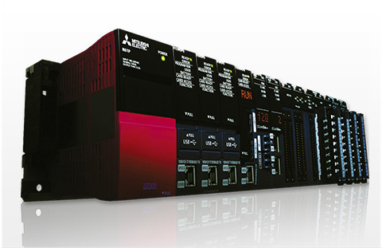

Technical Reports

Mitsubishi Programmable Logic Controller “MELSEC iQ - R Series” Supports Linux and Python
September 2021
Takuya Miyamaru*
(* Nagoya Works)
The Mitsubishi Programmable Logic Controller “MELSEC iQ-R Series” was developed to perform tasks in the manufacturing industry and reduce total cost of ownership (TCO). In order to do such tasks as increase the operating rate of production facilities and improve product yield, it is necessary to manage, analyze, and use production site data by using the Internet of Things (IoT) and artificial intelligence (AI) as well as data analysis. To satisfy such demand for IoT and AI/data analysis, the MELSEC iQ-R Series’ C intelligent function modules, which perform mathematical operations in C/C++, now support Linux.
Technical Reports
Mitsubishi Programmable Logic Controller “MELSEC iQ - R Series” Supports Linux and Python
Products

The core for next-generation automation environment.
To succeed in highly competitive markets, it's important to build automation systems that ensure high productivity and consistent product quality.
MELSEC iQ-R is taking a three-point approach to solving these problems: Reducing TCO, increasing Reliability and Reuse of existing assets.